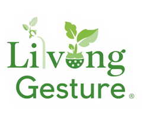

This little card carries real seeds inside. Don't throw it away — plant it, water it, and watch something beautiful grow.
Step 0
Your Living Gesture tag contains one of these. Tap to see your personalised planting guide.
Grows into a fragrant lime tree. Loves warm sunny spots and rewards patience with fruit.
Citrus AurantifoliaFast-growing and rewarding. Produces small spicy chillis perfect for Pakistani cooking.
Capsicum AnnuumThe Guide
Place your seed paper tag in a small bowl of room-temperature water. Leave it overnight, around 8 to 12 hours. This softens the paper and wakes the seeds up so they are ready to sprout.
Fill a small pot or container with good quality soil. Regular potting mix from any nursery or garden shop works perfectly. Make sure the pot has a drainage hole at the bottom so water does not sit and rot the roots.
Make a small hole about 1 cm deep in the soil. Place the soaked tag flat inside the hole and cover it with a thin layer of soil. Press it gently — not too hard. The seeds need to breathe.
Put the pot somewhere it gets good sunlight — a windowsill, a balcony, or outdoors. Seeds need warmth to germinate. Pakistan's climate is generally great for this.
Water lightly every day or every other day. The soil should stay moist but never soggy. Use your finger to check — if the top 1 cm feels dry, it is time to water. Do not pour a lot of water at once.
Once you see the first tiny green shoots coming out of the soil, the hard work is done. Keep watering, keep it in sunlight, and the plant will take care of the rest. Be patient — every seed grows at its own pace.
After It Sprouts
Once your plant is growing, here is what it needs to stay happy and healthy.
Both lime and chilli plants love sunlight. At least 4 to 6 hours of direct sun per day keeps them healthy and strong.
Water regularly but do not overdo it. Check the soil before watering. Wet soil that never dries will rot the roots.
Pakistan's warm climate is ideal. Both plants grow well in temperatures between 22°C and 35°C. Protect from frost.
Once a month add a small amount of regular fertilizer or compost to the soil. This gives the plant the nutrients it needs to produce fruit.
Once the plant is a few months old, trim any dead leaves or branches. This helps the plant focus its energy on healthy new growth.
When roots start coming out of the drainage hole, it is time for a bigger pot. Move up one size and add fresh soil.